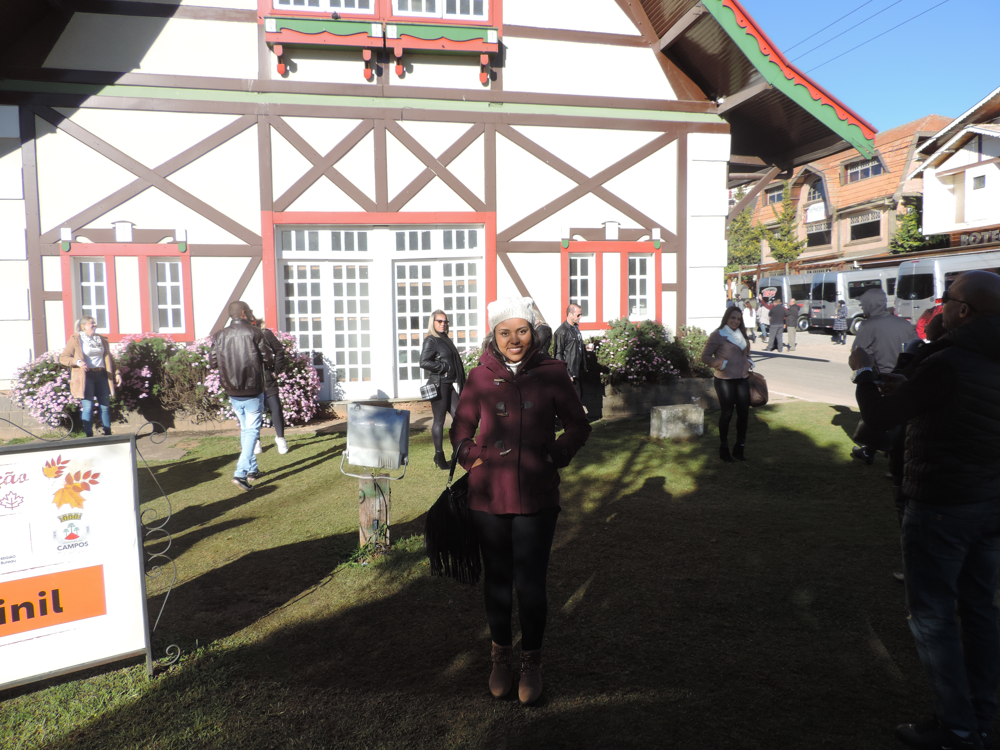

Meu nome é Natalia, nasci em Itajubá-MG, Brasil.
Eu sou Engenheira de Produção e Mestra em Engenharia de Energia.
No tempo livre eu gosto de passar tempo com a minha família, meus cachorros e namorado.
Além disso, gosto de cozinhar, realizar atividades físicas, colorir, assistir séries, filmes,
ouvir música e de jogos eletrônicos.
Eu gosto de dia nublados, de ficar em casa e quando possível de viajar.
Atualmente, estou estudando Desenvolvimento Web na Trybe e tenho gostado muito.
Eu destaco esta última habilidade, pois é muito importante você ter uma sensibilidade
em relação ao outro e buscar sempre o melhor para atender as necessidades deste e respeitar as diferenças,
pois cada pessoa é única. No mundo de hoje a empatia é uma característica importante para um bom convívio.
Nesta seção vou deixar uns links, um para acessar a minha foto e outro para entrar na minha página
favorita que é o YouTube: